Overview
Winslab is a cue stack for live operation. You build a list of cues, arm the ones you want, and fire them with GO. Everything is designed around two questions an operator asks mid-show: what runs next, and what just happened.
This guide covers Winslab 0.7 and later. It documents the application as it behaves today, including the rough edges listed under Known limitations.

The window
- Toolbar — the WinsLab menu (New, Open, Save, Save As, Recent, Settings), the workspace name with a dirty dot, and the add-cue buttons.
- Cue list — the running order. One row per cue, with duration, pre-wait, post-wait, and any auto-advance in the columns on the right.
- Inspector — settings for the selected cue. Tabs change with the cue type.
- Waveform / timeline — the waveform of the selected audio cue, or the timeline editor when a timeline-mode group is selected.
- Run log — hidden by default; the LOG button in the transport bar reveals it.
- Transport bar — STOP, GO, PANIC, the running indicator, the strip buttons (LOG, MONITOR, RF, SCRIPT) and the selected cue.
- The strip — the panels along the bottom share one space and open one at a time: the run log, the show monitor, the wireless panel or the script. Whichever button is lit is the one showing.
Install
macOS
Download .dmg
A Linux AppImage is also published and is experimental. Audio, OSC, network, and script
cues work; MIDI cues need ALSA development headers (libasound2-dev) installed
before dependencies are installed, because the native midi module is compiled
at install time.
Winslab is not code-signed for the App Store, so the first launch may warn about an
unidentified developer. Downloads come from pub.winslabapp.com.
Free and Pro
The cue stack is free, and it is the whole of the free app: every cue type, the timeline, the waveform, the run log, workspaces and the demo show. WinsLab Pro is the rest of the show — the services that listen, the views the show is run from, and the panels that read it. Every Pro section in this guide is marked Pro.
Pro is unlocked with a license key: WinsLab ▾ → Settings… → License, paste the key, Activate. The key is checked on the machine it is entered on and nothing is sent anywhere, so a venue with no internet unlocks the same as any other, and going to air afterwards tells nobody anything. It is not tied to the computer, because checking that would take an activation server or an identifier collected before the sale; keeping one key to one machine is a matter of trust. The key is checked when the app starts, so a show that began licensed finishes licensed, and a key that has run out locks the next launch rather than the performance. The same tab deactivates it.
Show files are never affected by which half you are running. A workspace written with Pro opens on any machine with its scenes, its mic plot and its triggers intact, and saves back exactly as it arrived. Without a key the Pro surfaces show what they are and how to unlock them, the show services do not start, and a scene cue fired from the stack writes that it needs a license into the run log and lets the rest of the show carry on.
Workspaces
A workspace is one show: the cue list plus audio and MIDI settings. Workspaces are saved
as .wlab files, which are plain JSON and safe to keep in version control.
| Action | Where | Notes |
|---|---|---|
| New | WinsLab menu, Ctrl/Cmd + N | Starts an empty show named Untitled. |
| Open | WinsLab menu, Ctrl/Cmd + O | Native file dialog, filtered to .wlab. |
| Open Demo | WinsLab menu, or the button on an empty cue list | The example show that ships with the app. |
| Save | WinsLab menu, Ctrl/Cmd + S | Writes to the current path, or asks for one the first time. |
| Save As | WinsLab menu, Ctrl/Cmd + Shift + S | Always asks for a path. |
| Recent | WinsLab menu | The last ten workspaces, kept in the app's user data folder. |
| Rename | Double-click the workspace name | Enter commits, Escape cancels. |
The demo workspace
WinsLab ships an example show with one cue of every type: a sequence group, a timeline group, audio with fades, MIDI, OSC, a network request, a script, and a stop cue. Open it from the WinsLab menu, or from the button on an empty cue list. It opens as an unsaved workspace, so Save asks where to put your copy instead of writing over the bundled file, and its audio is copied into the app's user data folder when it opens — which is the path its audio cues play from.
Unsaved changes
An amber dot next to the workspace name means there are unsaved changes. Closing the window, starting a new workspace, or opening another one asks to save first, with Save, Don't Save, and Cancel.
While there are unsaved changes, WinsLab also snapshots the show into the app's user-data folder every 30 seconds. If a session ends without saving — a crash, a force quit, a power cut — the next launch offers the snapshot back with Recover and Discard. Recovered work counts as unsaved, so the amber dot is still there until you save. Saving, discarding, or closing with Don't Save clears the snapshot.
Saving replaces the file in one step and keeps the previous version beside it as
show.wlab.bak, so a save that fails part way through cannot leave a
half-written show. If a save does fail — a read-only folder, a full disk — the reason
appears in a bar at the top of the window, and the run log records it.
Moving a show between machines
Audio cues store the absolute path of their file. Copying only the
.wlab to another machine — or moving the audio files — leaves those cues
pointing at a path that no longer exists. Keep the audio next to the workspace and copy
the whole folder, or re-point each audio cue with the Browse button.
Workspaces written by older versions are migrated on load: missing timing fields are
filled in with defaults, the legacy autoContinue/autoFollow
flags are dropped (Advance defaults to none), and old group childIds arrays
become parent pointers. A stop cue from an older file gains
waitForFade: false, and the retired per-output
deviceId/channelPair fields are dropped.
Building a cue list

| To do this | Do that |
|---|---|
| Add a cue | Audio, Group, Fade, Wait, or Stop from the toolbar; MIDI, OSC, Network, and Script from the More menu. |
| Add audio quickly | Drag files from the file manager into the cue list. Each becomes an audio cue named after the file. |
| Select | Click a row. Click the empty space below the list to clear the selection. |
| Move the selection | Arrow Up / Arrow Down while the list has focus. |
| Rename | Double-click the name of an already-selected cue, or use Rename in the right-click menu. |
| Duplicate | Right-click and choose Duplicate. A group is copied with all of its children. |
| Delete | Right-click and choose Delete. Deleting a group deletes its children too. |
| Reorder | Drag a row. A blue line shows where it will land. Dragging a group moves its whole subtree. |
| Make it a child | Select a group before adding a cue, or drag the cue onto the group's children. |
| Disarm | Right-click and choose Disarm, or clear Armed on the Basics tab. Disarmed cues are skipped by GO; a disarmed row is marked with a disarmed pill and a dimmed name and type icon. |
| Colour label | Pick one of the eight swatches on the Basics tab. The colour shows against the left edge of the row. |
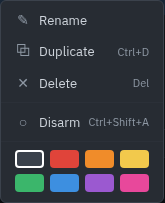
Columns
# is the cue number and type icon. Name is the cue name, shown as untitled when empty. Duration shows the cue's own duration once it is known — decoded from the audio file, or set directly for waits and fades. Pre-W and Post-W show the waits either side of the cue. Advance shows the auto-advance mode, and stays blank when it is set to none.
While a cue runs its row shows a pre-wait or post-wait pill, and a playing audio cue shows a thin progress bar.
A group row's duration is derived from its children rather than stored: a timeline group ends at the furthest child, and a sequence group sums its children. Playlist and random groups fire on demand, so their length cannot be known and the column shows –.
Timing and advance
Every cue, whatever its type, has the same timing model on the Basics tab. It is worth understanding once, because groups, auto-advance, and the timeline all build on it.
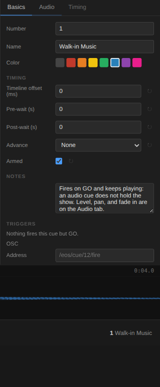
| Field | What it does |
|---|---|
| Pre-wait | Delay before the cue fires. The row shows a pre-wait pill while it counts down. |
| Post-wait | Delay after the cue finishes, before the next one may run. |
| Duration | How long the cue itself takes. Set directly for waits and fades, detected from the file for audio cues. |
| Advance | None, On start, or On end — see below. |
| Timeline offset | Where the cue sits inside a timeline-mode group, in milliseconds from the group's start. |
| Armed | A disarmed cue is skipped by GO, and excluded from group playback. |
| Notes | A free-text field for the operator. It never affects playback. |
The order of a firing is always: pre-wait, then the cue runs, then post-wait, then the cue is finished.
Advance
None — the cue finishes and stops. The operator presses GO again.
On start — the next cue fires as soon as this one has started, so both run together.
On end — the next cue fires after this one completes, including its post-wait.
Auto-advance is what makes a cue stack playable as a sequence. With Advance set to On end for every cue, a single GO runs the whole show.
When you press GO, the selection moves to the cue that will be fired next, skipping over any cue that is about to fire itself. That way the highlighted row is always the next thing GO will fire.
Transport and keyboard
GO
Fires the selected cue. Space
STOP
Cancels every timer, stops all audio, clears all running state, and abandons work that is still in flight — a request or script that finishes afterwards cannot restart the show. Escape
PANIC
The same, with a 200 ms audio fade instead of a cut so it does not click, and it stops a running script. Shift + Escape
The running indicator next to the LOG button counts the cues currently in pre-wait, playing, or post-wait, and reads idle when nothing is running.
These keys are ignored while you are typing in a text field, so editing a cue name will not fire the show.
Cue types
Nine cue types share the timing model and differ in what they do when they run. The tabs in the inspector change with the selected cue.
| Type | Used for | Tabs |
|---|---|---|
| Audio | Playing sound files | Basics, Audio, Timing |
| MIDI | Sending MIDI messages to gear | Basics, MIDI |
| OSC | Sending OSC messages over the network | Basics, OSC |
| Wait | Pausing the sequence | Basics, Wait |
| Fade | Ramping another cue's volume or pan | Basics, Fade |
| Stop | Stopping audio | Basics, Stop |
| Group | Organising and triggering other cues | Basics, Group |
| Network | HTTP requests to other systems | Basics, Network |
| Script | Running JavaScript at a cue point | Basics, Script |
Audio cues

| Field | Range | Notes |
|---|---|---|
| File | — | Browse, or drag files onto the cue list. Picking a file decodes it and fills in the duration. |
| Rate | 0.25x – 4x | Playback speed. Applies live. |
| Trim | 0 – 200% | Per-cue gain, separate from Volume. Applies live. |
| Volume | 0 – 100% | Applies live to the playing cue. |
| Pan | L100 – R100 | Applies live to the playing cue. |
| Start time | seconds | Where playback begins in the file. Also set by clicking the waveform. |
| End time | seconds | Leave empty to play to the end of the file. |
| Fade in | seconds | Ramps up from silence when the cue starts. |
| Loop count | -1 or 0+ | 0 plays once, a positive number is how many extra times the cue repeats, and -1 repeats until the cue is stopped or the show moves on. |
Waveform
Selecting an audio cue shows its waveform below the cue list, with the played part drawn in a lighter blue and a playhead while it runs. Click anywhere on the waveform to set the cue's start time there; if the cue is already playing, it seeks to that point instead. A dashed orange marker shows a non-zero start time, with a reset button in the header.
Accepted file types are mp3, wav, ogg, flac, m4a, and aiff in the file picker; the drop zone also accepts wave, aif, aac, opus, and wma.
MIDI cues
A MIDI cue sends a list of messages to one output port. Pick the port from the MIDI tab — the list is read from the system, and the refresh button re-reads it. If you leave the port unset, the cue uses the Default output chosen on the MIDI tab in Settings. If no ports are found, the field becomes a text box you can type a port name into.
| Message | Fields |
|---|---|
| Note On | Channel, Note, Velocity (0–127) |
| Note Off | Channel, Note, Velocity (0–127) |
| CC | Channel, Controller, Value (0–127) |
| Program Change | Channel, Program (0–127) |
| SysEx | Hex payload bytes; the F0/F7 framing is added for you |
Messages are sent in order, all at once, when the cue runs. Channels are 1–16. On Linux, MIDI needs the native module built against ALSA — see Install.
OSC cues
An OSC cue sends one message to host:port at an address, with a typed argument list. Each argument is an int, float, string, true, or false; changing an argument's type resets its value.
Winslab sends OSC but does not yet listen for it, so incoming OSC cannot trigger cues.
Wait cues
A wait cue holds the sequence for its duration. On its own it does nothing visible; its value is in a sequence, where it is the gap between two things — a scene change, a count for a stage call, or a delay before a network trigger.
Set the duration on the Wait tab. Add Advance > On end on the Basics tab if the cue after the wait should fire by itself.
Fade cues
A fade cue ramps another cue's volume or pan over a duration. Choose the target cue from the Fade tab; the list shows every other cue as number and name.
| Field | Notes |
|---|---|
| Target cue | The cue being ramped. Fades apply to audio cues. |
| Property | Volume or Pan. |
| Target value | 0 – 1, where 1 is the cue's full level. |
| Duration | Length of the ramp, in seconds. |
| Curve | The shape of the ramp. Linear moves evenly; S-Curve eases in and out; Logarithmic moves most of the way early and spends the rest of the ramp in the upper part of the range, like a constant-dB fade. |
| Stop target when done | Stops the target cue once the ramp finishes. |
Stop cues
A stop cue halts a running cue: everything, or a single cue, either cutting instantly or ramping to silence first. Audio fades; a script cue is stopped and its run released, because a script runs on a worker of its own that no fade can reach. Aimed at a group it stops everything under it, however deeply the group nests, and the group does not carry on to its next child.
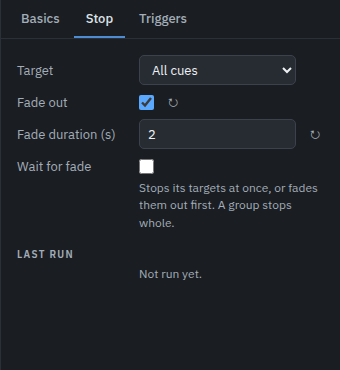
| Field | Notes |
|---|---|
| Target | All cues, one specific cue, or a group — which stops everything under it. |
| Fade out | Ramps the target to silence instead of cutting it dead. |
| Fade duration | Length of that ramp. |
| Wait for fade | Inert unless Fade out is ticked. When on, the cue stays open until the fade has finished sounding; when off, it completes as soon as it has stopped the target. |
By default the cue completes as soon as it has stopped the target, so a following cue can run while the tail fades; tick Wait for fade to hold it open until the fade has finished sounding. PANIC does the same thing globally, with a fixed 200 ms fade.
Group cues
A group holds other cues. Children are stored flat in the list and shown indented under their group; collapse the group with the chevron in its row. Deleting a group deletes its children.
| Mode | Behaviour |
|---|---|
| Sequence | Runs every armed child in order, then completes. |
| Playlist | Fires one armed child per GO, so the operator steps through the group by hand. The group keeps the selection until the last child has fired, then hands it on to the next cue. STOP returns it to the first child. |
| Random | Fires one randomly chosen armed child, then completes. |
| Timeline | Fires children at their Timeline offset, measured from the group's start. |
Disarmed children are skipped in every mode, and a group with no armed children completes immediately.
Timeline mode

Select a timeline group and the timeline editor replaces the waveform. Each child is a block whose position is its offset and whose width is its duration. Drag a block horizontally to retime it, or set the offset numerically on the Basics tab. The zoom control steps through 5 to 800 pixels per second.
A dragged block snaps to the edges of the other blocks and to the start of the group, so runs of cues lock together end to end without pixel-perfect aim. A blue guide marks the edge a block has locked onto. The pull is measured in screen pixels, not milliseconds, so zooming in narrows it: at the fine zoom levels you can place a block within a few milliseconds by hand, and the Basics tab takes an exact offset.
Clicking the ruler seeks: the group stops, and playback resumes from that point, with audio and waits starting mid-way where they should. Cues that have already passed are not replayed — a network or script cue before the playhead will not fire again. The expand button in the timeline header gives the editor the whole window.
Network cues
A network cue makes an HTTP request when it fires, for triggering lighting desks, video servers, or webhooks. The show waits for the response, or for the timeout, before moving on — so a slow or unreachable target holds the cue.
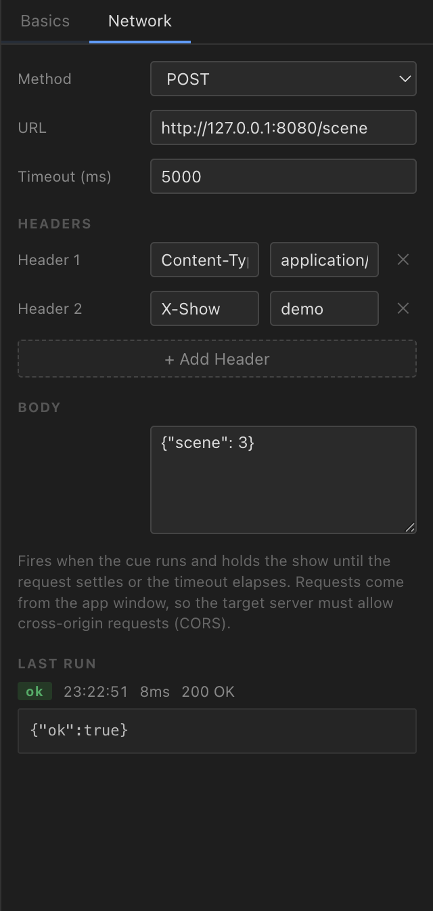
| Field | Notes |
|---|---|
| Method | GET, POST, or PUT. |
| URL | The full address, including the scheme. |
| Timeout | Milliseconds, 5000 by default. The request is aborted when it elapses. |
| Headers | Any number of name/value pairs. Add Header adds a row; the ✕ removes one. |
| Body | Sent for POST and PUT. Disabled for GET, which cannot carry one. |
Requests come from the app window, so the target server must allow cross-origin
requests. A server that does not return CORS headers makes the cue fail with
Failed to fetch. A non-2xx response is reported as a failure in the log and the
Last Run section, but the show still advances.
Script cues
A script cue runs JavaScript at a cue point, on a worker thread of its own — a script
that never yields cannot freeze the interface. The script is an async function body, so
await works and the cue holds the show until the script finishes. A script
that throws is reported in the log and the cue still completes, so one bad script cannot
stall a show.
The Timeout field is the longest the script may run, 60000 ms by default. A script that is still running when it elapses is stopped and reported as a failure; set it to 0 to let a script run for as long as it needs. STOP and PANIC also stop a running script, as does a stop cue aimed at it.
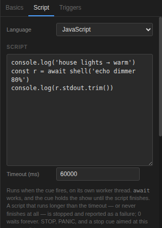
Helpers
| Helper | What it does |
|---|---|
await shell(command, options?) |
Runs a system command and resolves { stdout, stderr, code, signal }. Options are timeout (milliseconds, 10000 by default), cwd, and env. Commands start in the workspace folder. |
await include('path/to/file.js') |
Runs another JavaScript file and resolves what that file returned, so a helper file can hand back values. Each file is read and run once per cue, however many times it is included; an include inside an included file resolves relative to that file. A cycle — two files including each other — is reported as an error. |
console.log(), console.error() |
Write to the run log, so output is visible without DevTools. |
An example that calls a system tool and reports what it said:
console.log('house lights → warm')
const r = await shell('dimmerctl set 80')
console.log(r.stdout.trim())
Script cues are not sandboxed. They run in the app, with the same file
and process access as the application itself, and the helpers above are their only way
to reach it. A workspace file is executable code, so only open
.wlab files you trust.
Reading results
Two places tell you what a cue did. The Last Run section at the bottom of every cue's own tab shows the outcome of that cue's most recent firing: when it started, how long it took, and the reason for any failure — the HTTP status and the start of the response body for network cues (cut off at 4000 characters with a truncation marker), the message for a script that threw or timed out, or the port an audio, MIDI or OSC cue could not reach.
A cue that could not do what it says is reported rather than passed over: an audio cue whose file is missing, a MIDI cue aimed at a port that is not there, and an OSC send that failed all mark the run as failed. Note that a MIDI or OSC cue can only report what the send itself did — OSC is UDP, so a message that leaves the machine and is never received still counts as sent.
The run log records every firing across the show. Open it with the LOG button in the transport bar.
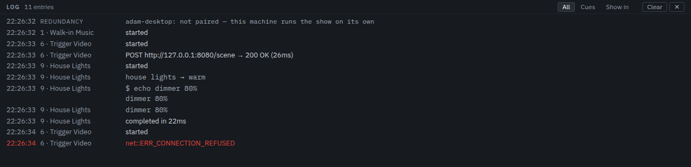
Log lines are coloured by kind: cue lifecycle in the normal text colour, script and shell output in monospace, and failures in red. Each line carries the time, the cue it belongs to, and the message. Clear empties the log.
The log is a session history, capped at the last 500 lines, and a single script run emits at most 200 lines before it is truncated. It is not written to the workspace file, and it is not kept when the app closes.
In a packaged build there is no developer console, so the log panel is the only place to
read script output. Running from source, the same failures also appear in the terminal as
[renderer] … lines.
The show around the cue stackPro
A cue stack is only part of what is happening in the room. WinsLab also listens: it takes OSC and MIDI from the desks, tablets and cue lights around it, watches wireless transmitters against the mic plot, and notices when something on the network stops answering. Those are the show services, and the MONITOR button opens the panel that shows what they are doing.
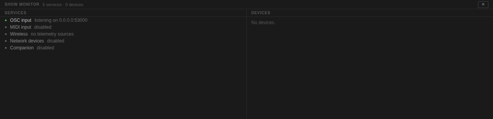
The monitor
Three columns, left to right. Services is what is listening and what it is doing — a service that failed says why, and a restart button sits next to it. Devices is what is on stage or on the network, with the readings each one reports. Events is what just arrived, newest last; scrolling up releases the auto-follow so the view stops moving while you read.
Alarms appear above the columns and are also written to the run log, so an alarm outlives the panel being closed. A failing service never stops the cue stack: a wireless poller that cannot reach its rack, or an OSC port another program is holding, degrades that one service and says so while GO keeps working.
What can be listened to
| Service | What it does |
|---|---|
| OSC input | Listens for OSC on a port of its own (53000 by default) and publishes every message with its sender and arguments. A port another program holds is reported rather than taken. |
| MIDI input | Opens the input ports you choose (all of them if you choose none) and decodes what arrives. An interface that disappears mid-show is reported, because the cue that played a note down it will silently play nowhere. |
| Wireless | Polls your receiver telemetry and joins it to the mic plot. See Wireless and the mic plot. |
| Network presence | Browses the network over mDNS for devices that announce themselves — Dante endpoints among them — and reports one that leaves. |
Every service is off or idle until it is asked for, except OSC input, which comes up on its
default port so a desk can talk to a new workspace without any setup.
Wireless and the mic plotPro
The wireless panel answers the two questions asked most often in a radio-mic show: who is wearing which pack, and which one is about to die. The RF button opens it.
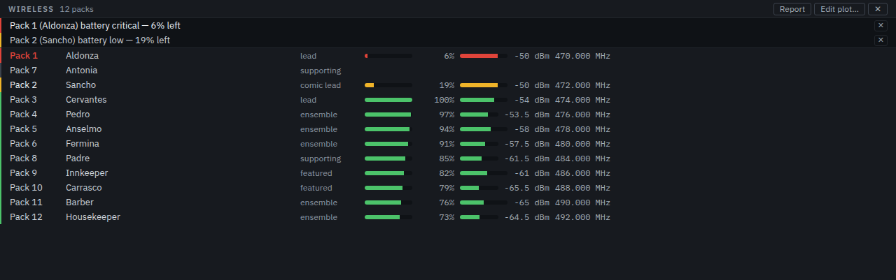
The plot
A pack has a label, the receiver channel it is patched to, and the performer wearing it. The panel sorts by trouble rather than by number: a pack at a critical battery first, then one that has gone quiet, then one that is low, with everything healthy below and unassigned packs at the bottom. A row shows the battery and RF as bars beside the numbers, the frequency, whether the channel is muted, and the performer's role.
The wording is deliberate. A pack with no channel assigned is unpatched — a patch waiting to be made, not an alarm. A pack that is assigned but has never reported is silent: the rack may still be booting, or the transmitter may be switched off. A pack that stops reporting for longer than the threshold is offline, and that is when it raises an alarm — including a pack the rack never reported at all, because the plot is the expectation.
Where the readings come from
WinsLab does not speak a receiver's own protocol. A source returns a JSON document with this shape, over HTTP or from a file on disk:
{
"channels": [
{ "id": "ulxd-1", "name": "Pack 1", "batteryPercent": 42,
"batteryMinutes": 95, "rfDbm": -62, "audioLevel": 71,
"muted": false, "frequencyMhz": 606.5 }
]
}The field names are the contract: a bridge written against a receiver's own API only has to emit them, and any field a channel does not report is simply left out — the panel shows nothing for a reading that was never made rather than a zero. Add sources on the Show tab in Settings, where the service also reports what it is doing.
Demo rack loads a simulated twelve-pack show with a pack in trouble, one that is low and one that never reports, so the panel and its alarms can be seen without a receiver on the bench. It replaces the source list rather than adding to it, and it brings its own cast only when the plot is empty — a plot somebody entered is not the demo's to overwrite. The packs are plainly a simulation and not real hardware.
Entering your plot
Edit plot… opens the cast and the packs. A performer is a name and a role; a pack is a label, the receiver channel it is patched to, and the performer wearing it. Channels are offered from what the wireless service is already hearing, so a patch is picked rather than typed from memory — but the field stays free text, because a pack that is switched off today is still part of tonight's plot.
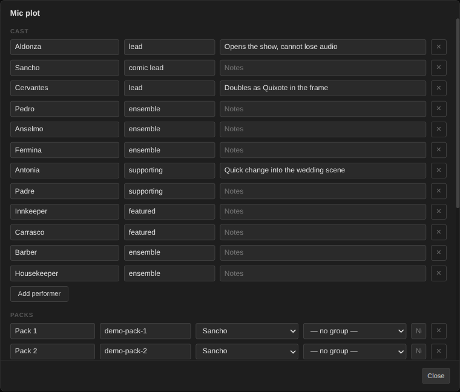
Text fields commit when you leave them, so nothing is rewritten mid-word. Every change goes through the same operations the rest of the app uses, which is what makes the next part work without anything extra.
Swaps
Handing a pack to someone else — or taking it off them — is recorded as a swap: the pack, who it came off, who it went to, and when. A swap is written to the run log at the moment it happens and kept in its own list, so a quick change at 20:14 can be answered long after the fact. Removing a performer releases every pack they were wearing, and each release is a swap in its own right.
The report
Report reads the night back: for each pack, the performer, the lowest battery it reached and when, how many times it went quiet, and how many times it changed hands. The same text can be copied to the clipboard, which is what goes in the show file or the email about which packs need charging.
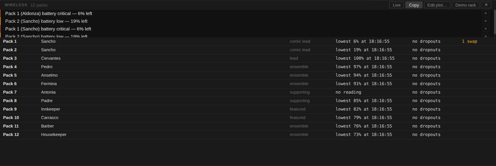
The report is read from the running session: the battery floor and the dropout count
are kept by the wireless service as it polls, and the swaps are kept in the workspace.
Closing the app ends the session, so copy the report before you do.
Thresholds and alarms
Alarms are raised on a crossing, not on every poll: a pack that sits at 8% for an hour says so once, and only says so again if it recovers and falls again. The defaults are a warning at 25% and critical at 10% battery, a warning below -75 dBm, and six seconds of silence before a channel counts as gone. All four are set on the Show tab in Settings, and they live in the workspace with the plot, so a show carries its own idea of what is bad.
The silence window is the one worth thinking about. Six seconds is long enough that a dropped poll does not read as a lost pack, and short enough to notice a transmitter that has actually died before its performer is halfway through a line. A show whose packs get switched off between scenes is normally happier with a longer window — thirty seconds is a common choice — because the row's colour already turns the moment the silence starts, and the warning is what is being held back, not the news.
The alarm names the performer because the plot says who is wearing the pack: "Pack 1 (Aldonza) battery critical — 6% left" is a sentence you can act on, where a channel number is one you have to look up.
TriggersPro
A cue usually fires when the operator presses GO. A trigger lets a message from somewhere else fire it: the lighting desk, a tablet, a footswitch, a show-control macro. Triggers live on the Basics tab, under the fields every cue shares.
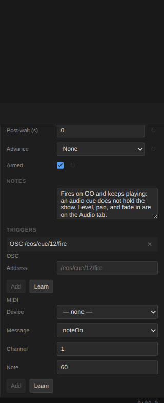
OSC and MIDI triggers
An OSC trigger is an address, matched exactly — /eos/cue/12/fire fires the cue
it is on and nothing else. A MIDI trigger is a message on an input port: a note-on or
note-off (any velocity), a controller (any value), or a program change. The value a desk
sends is how it expresses itself, not which cue it means, so it is not part of the match.
Learn is usually faster than typing: press it, then send the message from the desk, and the trigger is written from what arrived — the address, or the port, channel and message.
A trigger fires the cue the same way GO does: pre-wait, post-wait, advance and grouping all behave normally, and the log line says what fired it, so a triggered cue reads differently from one the operator fired. Disarming a cue stops its triggers too — that is what disarming is for.
Nothing about a trigger can interrupt the show: a cue that is already running keeps running,
and a message that nothing answers to is shown in the monitor and otherwise ignored.
The script, and the tabletPro
Most operators keep the script open while they work. The SCRIPT button puts it in the strip: the document, the cue that fires on each line pinned to it, and the line the next GO will fire from marked as the show moves.
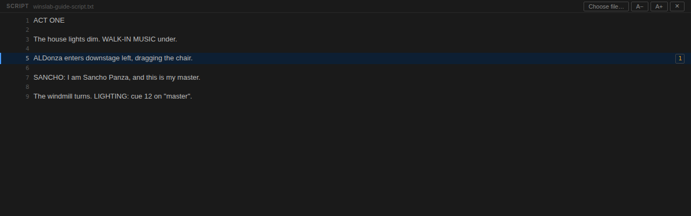
Pinning cues to lines
Choose the file, then select a cue and click the number of the line it fires on. The line lists the cues pinned to it, and clicking the number again unpins. The line is stored on the cue, so the pins travel with the workspace — and a script that is replaced by a later draft keeps them, because a line number is a line number.
Following the show
The line of the cue GO would fire next is highlighted and scrolled into view. Scroll the document yourself and the follow releases, so reading ahead is not yanked back; the follow button returns to the show. A− and A+ set the size, which is remembered in the workspace.
The tablet
The companion serves a read-only view of the show — the running order, the next cue, what is running now, the script with the current line marked, and the recent alarms — to anything on the same network with a browser. There is nothing to install: open the address the Show tab reports, with the token on the end of it.
It is off until it is switched on, and it refuses every request that does not carry the token. Nothing on the companion can change anything: it is a window on the show, not a control surface. Anyone on the same network who has the token can watch, so treat it the way you would treat a script left open on the desk.
Scenes, and the deskPro
The part of a musical that a cue stack does not handle on its own is the mics: at the top of a number four people walk on, two others walk off, and the desk has to follow. A scene is who is open on stage. Recalling one tells the desk the difference.
The Scenes switch at the top right opens the view it all happens in: the same show as a grid, filling the window in place of the cue list, with the transport bar — GO, STOP, PANIC — exactly where it was. It is where the show is run and the only place any of it is edited. There is nothing to open and no dialog to confirm, because a second way to edit the same thing is a second way to get it wrong.
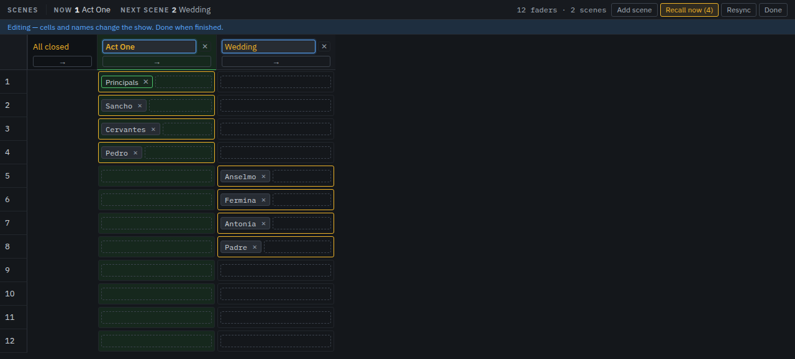
Reading it
A filled cell is a mic that is open in that scene. The column of the scene the desk is set to is tinted and the rows it opens are brightened, which together answer the question asked most often in a radio-mic show: who is on right now? Each column is a name and two presses: → sends that scene to the desk, and the ✕ beside it removes the scene. How many mics a scene opens is the block of colour under it, so nothing spells it out.
Following the show
A musical is wider than the window: thirty numbers at a readable width run several screens across. So the view follows the show instead of waiting to be scrolled — when a scene cue, a trigger or a press moves the desk to a scene, that column is brought to the left of the grid with the ones after it laid out to the right. A short number cannot leave the next scene off the side of the screen.
The header carries the same answer in words, in the one part of the view that never scrolls: now with the scene the desk is on, and next with the one after it in the running order. Before the show starts, now says nothing recalled and next names the opener. Scrolling by hand is left alone — the view moves when the show does, and not otherwise.
Editing it
Click a cell to open or close that mic in that scene. Add scene appends a column and the name is edited in the column header, where it is read. The rows are the people wearing the mics; the pack's label and the desk group it feeds are set once at setup, in the mic plot editor with the rest of the plot, so the grid carries no field for them.
A deleted scene is not gone: Ctrl/Cmd + Z puts it back where it was, with the mics it opens. The same undo covers the cues, the scenes and the mic plot, so an edit made in either view is one press from being back.
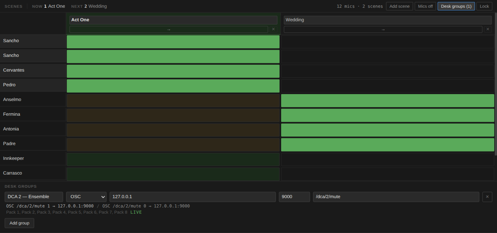
The desk groups
Desk groups (N) opens a drawer along the bottom: each group's label, how the desk is told to open and close it, the exact messages it will send, what is feeding it and whether it is open now. MIDI is the common case — one note per group, open on note-on and closed on note-off — and OSC covers desks that prefer it, with the open and the close value on one address.
What a recall sends
Only what changed. A group whose mics are all closed is closed, a group with any one of its mics open is opened, and a group already in the right state is not mentioned at all — a recall should be three messages, not a sweep of every fader. Groups that no mic is assigned to are left alone entirely, because the desk may well be doing something else with them.
Editing never moves the desk. When the scene on stage has drifted from where the desk was left, the view offers Apply to desk (N) with the number of groups behind, and waits. Mics off closes everything the plot drives: the panic button for mics rather than for sound.
Following the show
A recall can be a button press or a cue. Add a Scene cue from the toolbar's More menu, point it at a scene, and the desk moves when GO reaches it — pre-wait, post-wait, advance and triggers all behave as they do for any other cue. A cue that has not been pointed at a scene refuses rather than being read as “close everything”, and the run log carries the recall under the cue's own label, so the log reads as one story.
Locking it
Lock is for curtain up. While it is on, recalling and applying stay live — that is the point of the view — and every way of changing the show closes: the cells cannot be moved, scenes cannot be added, renamed or removed, and the groups cannot be edited. A stray click during a number cannot change who is open.
The lock is saved with the workspace, so a show that was locked when the app last closed
comes back locked — including after a crash and recovery, which is exactly when you do not
want to be one click away from editing the plot. The desk's own state is different: it
belongs to the session, and a recall only remembers what the desk accepted, so a message
that could not be delivered is reported and tried again next time.
Settings
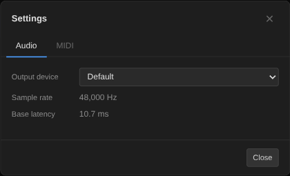
| Tab | Setting | Effect |
|---|---|---|
| Audio | Output device | Routes all playback to the chosen system output. |
| Audio | Sample rate, Base latency | Read-only readouts of the running audio engine: the sample rate in Hz and the base latency in ms. They report the live AudioContext and cannot be changed. |
| MIDI | Default output | Used by MIDI cues that do not name a port of their own; a cue with its own port overrides it. |
| Show | OSC input | The port WinsLab listens on for OSC, and whether it listens at all. 53000 matches the convention QLab uses, so one patch sheet covers both. |
| Show | MIDI input | Which input ports are opened. With none selected every available input is opened, and a port that appears later is opened when it arrives. |
| Show | Wireless telemetry | The sources the wireless panel reads, one row per source: a name, HTTP or file, and the URL or path. Each section also reports what its service is doing, so a change is confirmed on the screen that made it. |
| Show | Network presence | Whether to browse the network, which mDNS service types to browse, and how long a device may stay quiet before it counts as gone. |
| Show | Tablet companion | Whether to serve the show on the network, on which port, and with which token. The address to open on the tablet is reported underneath once the service is running. |
| License | License key | This machine's WinsLab Pro key: what it is licensed to, when it expires, Activate and Deactivate. See Free and Pro above. |
Settings belong to the workspace, so they travel with the show, and changing them marks it as unsaved. The Show tab's settings are the ones the Pro services read: without a license they are kept with the show exactly as they are, and the services do not start.
Keyboard reference
| Keys | Action | Where |
|---|---|---|
| Space | GO — fire the selected cue | Anywhere except a text field |
| Escape | STOP — stop everything | Anywhere except a text field |
| Shift + Escape | PANIC — stop with a short fade | Anywhere except a text field |
| Ctrl/Cmd + N | New workspace | Anywhere |
| Ctrl/Cmd + O | Open workspace | Anywhere |
| Ctrl/Cmd + S | Save | Anywhere |
| Ctrl/Cmd + Shift + S | Save As | Anywhere |
| Ctrl/Cmd + , | Open Settings | Anywhere |
| Arrow Up / Arrow Down | Move the cue selection | Cue list |
| Escape | Clear the selection, or close the context menu | Cue list |
| Delete | Delete the selected cue | Cue list |
| Ctrl/Cmd + Z | Undo | Anywhere except a text field |
| Ctrl/Cmd + Shift + Z | Redo | Anywhere except a text field |
| Ctrl/Cmd + D | Duplicate the selected cue | Cue list |
| Enter / Escape | Commit / cancel a rename | Renaming a cue |
Undo and redo are Edit-menu accelerators, so they work wherever focus sits; in a focused
text field the field's own undo applies instead. Duplicate
(Ctrl/Cmd + D) and delete
(Ctrl/Cmd + Backspace or Delete) still need the cue list
focused. The history is one stack for the three things an edit destroys — the cue stack,
the scenes with their desk groups, and the mic plot — so an undo is never half a change,
and it keeps the last 50 edits.
Troubleshooting
A banner says the interface stopped unexpectedly
The window's process died and WinsLab restarted it, which resets the show: the cue
list comes back empty and anything unsaved is gone. The .wlab file on
disk is untouched, so open it again from WinsLab ▾ → Open Recent.
Save before a show rather than during one — there is no autosave yet.
A script cue never finishes
It is still running, and the show is waiting for it. Give the cue a shorter Timeout on the Script tab, or press STOP — both stop the script and release the show. A script cannot freeze the app while it runs, so the interface stays usable either way.
A network cue fails with "Failed to fetch"
The request never got a usable response. Three usual causes: the target server does not return CORS headers, nothing is listening on the host and port, or the URL is missing its scheme. Check the log for the exact message, and confirm the URL in a browser on the same machine.
A network cue succeeds but the show stalls
The server is not answering and the cue is waiting for its timeout — 5 seconds by default. Lower the timeout on the Network tab if the target should respond quickly.
A MIDI cue does nothing
Check the cue's port on the MIDI tab; if the cue does not name one, it falls back to the Default output set on the MIDI tab in Settings. On Linux, MIDI silently does nothing unless the native module was built with ALSA headers available.
An audio cue went silent after moving files
Audio cues store absolute paths, so moving the show or its audio breaks the link. Re-point the cue with Browse, or keep the audio beside the workspace and move the folder together.
A script cue does nothing
An empty script completes instantly and logs nothing but its start and completion lines. If the script is meant to produce output, look for an error line in the log — thrown errors are reported there and the cue still finishes.
GO skips a cue
That cue is disarmed, or it is a group child whose parent is running it. Disarmed cues are skipped by GO and excluded from groups.
The cue list looks empty after opening a show
If the file is not valid JSON, or opening it failed, Winslab reports
"Could not open file" and leaves the current show in place. Validate the
.wlab file in a text editor.
A trigger does not fire the cue
Three usual causes. The cue is disarmed — triggers respect arming. The OSC address is
not exactly the one being sent (/eos/cue/12 does not match
/eos/cue/12/fire). Or a MIDI trigger names a different input port from the
one the message arrived on; the monitor lists every message with the port it came in
on, which is the name to match.
The wireless panel shows no readings
The plot is there but no source is reporting. The Show tab in Settings reports what the
wireless service is doing, including why a source failed. A source has to return JSON
with a channels array — the shape is in
Wireless and the mic plot.
Where are the error messages?
In the run log (LOG button). Failures, HTTP statuses, and script output all land there. See Reading results.
Known limitations
These are behaviours and limits in the current build that differ from what the interface implies. They are listed so nothing surprises you during a show.
- Fixed caps. The run log keeps the last 500 lines, a single script run emits at most 200 lines, and run-log messages and network response bodies are cut off at 4000 characters.
- The script panel opens plain text only. A document over 1 MB, longer than 10,000 lines, or containing binary data — a PDF, a Word file, an image — is refused with the reason on screen instead of being rendered. That refusal is what stops a document that was never a script from taking the window down with it.
- Saves are silent. Nothing confirms a successful save beyond the dirty dot clearing.
- Group length is unknown for playlist and random groups. Their Duration column shows –, because the length depends on how the operator steps through them.
- Listeners are listen-only. OSC input and MIDI input receive, show, and can fire cues — but WinsLab does not act as a MIDI or OSC destination that other software queries.
- Wireless telemetry needs a source that speaks the documented JSON. Shure's System API, Sennheiser's receiver protocol and Dante's control protocol are not spoken directly, so a rack needs a small bridge between it and WinsLab — or the demo rack, which needs nothing. See Wireless and the mic plot.
- Presence reports, it does not route. The network service notices that a device is there and when it leaves. Subscriptions, clocking and patching stay in Dante Controller or the device's own software.
- Recording is not built in. WinsLab does not capture multitrack audio; a recorder runs alongside it. Triggers and OSC are how the two are tied together — a cue that arms the recorder, or a message from it that fires a cue.
- Script cues are unsandboxed. Treat a workspace file as executable code.
Show-night cheat sheet
Setting up
- WinsLab > New, then name the workspace by double-clicking the title.
- Drag your audio files into the cue list.
- Add waits, fades, OSC, MIDI, network, and script cues around them.
- Group a run of cues if you want them to fire as one, or to place them on a timeline.
- Set Advance to On end on each cue that should hand over to the next.
- Save.
Running
- Space fires the highlighted cue.
- The highlight moves to whatever GO will fire next.
- Escape stops everything; Shift + Escape stops with a fade.
- If something looks wrong, open the LOG and read the red lines.